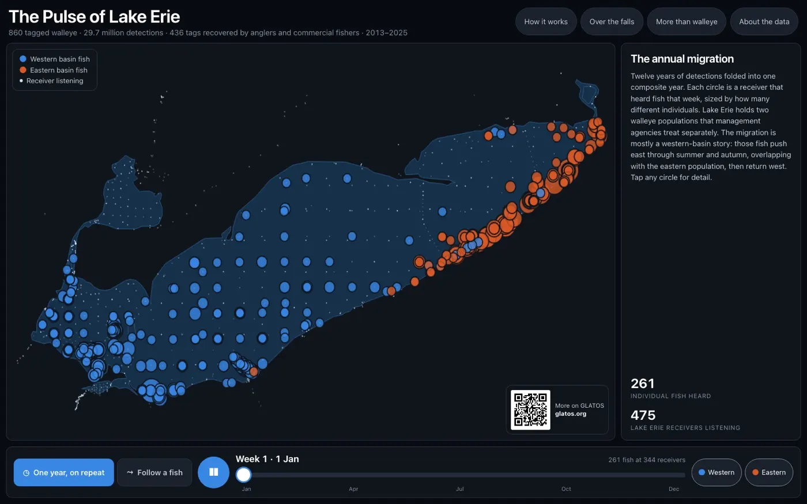
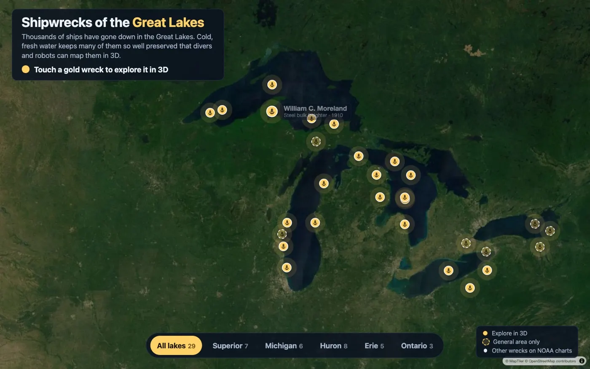
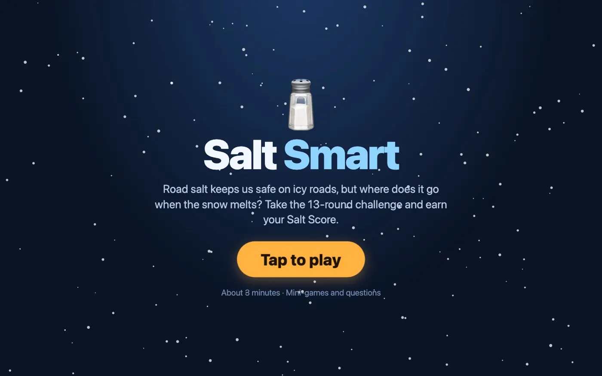

Gannon University CLEER · Erie, Pennsylvania
Great Lakes wall & Erie table
Two installations, each with a touch screen that controls a large display above it. Together they cover walleye migration in Lake Erie, shipwrecks across all five lakes, road salt, and live conditions on the water.
2 dual-screen installations
Touch control
Live maps


